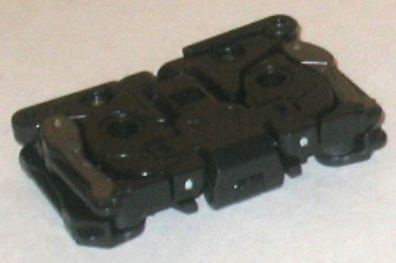
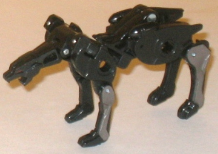
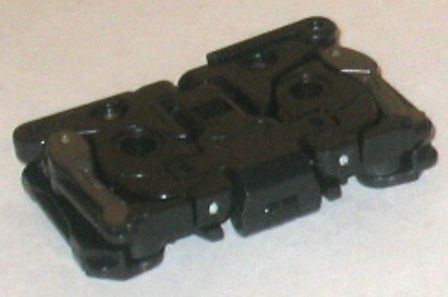
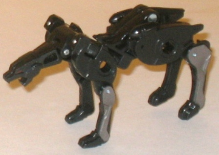
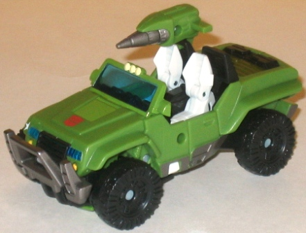

 
Allegiance : Decepticon
Series : Classic/Generation One
Difficulty of Transformation : Easy
Color Scheme: Black and some metallic gunmetal gray and light red
Individual Rating : 7.8
 Ravage
Ravage


Allegiance
: Decepticon
Series
: Classic/Generation One
Difficulty of Transformation
: Easy
Color Scheme:
Black and some metallic
gunmetal gray and light red
Individual Rating
: 7.8
Ravage finally gets a
pint-sized upgrade for Universe 2.0-- and as a cassette tape, no less!
Well, sorta. It's fairly flat, it's rectangular, and it's got two little
holes in it like a cassette tape, but Hasbro didn't go to the effort of
giving Ravage a bunch of cassette-like mold details in this mode, probably
to de-emphasize the cassette-ness of the toy. Since, y'know, cassette tapes
are no longer being made and kids will have no idea what they are. Instead
Ravage is just obviously a bunch of folded-up cougar parts. But hey! He
can fit in
G1 Soundwave's
tape deck-- a
really nice feature, there! He can also be stored on the back of Hound's
jeep mode in this form, like he's being "carted back" to the Autobot base.
Ravage's cougar mode
is a considerable improvement over his old G1 form, though, that's for
sure. The main thing, of course, is that it's not 2-D. Ravage's transformation
is quite ingenious, involving parts of him doubling up on themselves to
widen his stance a bit. However, the downside to this transformation is
that his main body is a bit crooked and angled near the center, which can
look a bit odd in some poses. His tail is also teeny tiny, and isn't much
more than a lengthy stub, to be honest. However, the rest of his cougar
mode is top-notch, especially considering what he has to turn into-- the
detailing on the head is spot-on, and the gunmetal gray helps to break
up the black some. He has his characteristic hip-missiles molded-in, but
sadly they're not painted. Ravage can move at quite a few points considering
his size-- he can move at the neck, front knees, back hips, back knees,
and at the base of his tail (but sadly not at his mouth).
 Autobot
Hound
Autobot
Hound


Allegiance
: Autobot
Size
: Deluxe
Series
: Classic/Generation One
Difficulty of Transformation
: Medium
Color Scheme
: Moderately light jungle
green, black, and some transparent blue, metallic gunmetal gray, white,
yellow, silver, light red, and muddy dark military green
Individual Rating
: 9.4
Not just satisfied with
a
Legends-class figure
, Hasbro has also
re-done Hound in the deluxe class, and with an alt mode that honestly looks
a bit more "animated" and "cartoony" than most of the other Universe 2.0
figures. That's not to say it's bad by any measure-- the proportions are
for the most part realistic, though the windshield may be a tad small--
but the overall look is smoother and more curved than most of the other
toys, almost like it's halfway between the traditional and Animated aesthetics.
Regardless, this is a pretty seamless mode, with no robot extras to speak
of and some nice details-- I particularly like the pumped-up front grill,
the characteristic white star on the right side of the front bumper, and
the detailing on the beefy tires. The white of the seats also contrasts
quite well wit hthe green and black of this mode, and makes for an excellent
secondary color. I'm also fond of the transparent blue plastic used for
the headlights and windshield-- it's quite an eye-catching shade of color.
The headlights and taillights are also painted, as are the other necessary
details of this mode, so that's all good. Hound's weapon is a gun mounted
over the right seat, though it can't fire an actual projectile or anything.
As mentioned before, he can carry Ravage in cassette form on his back end
by flipping out two small pegs.
Hound's robot mode is
also quite good-looking, though the feet are a bit odd as they're overly
large proportionally and there's no "heel" to them. (Despite this, due
to their flat nature and large size Hound's pretty stable.) Hound carries
a fairly close resemblance to his traditional look on this figure, what
with the hood-chest and the back ends of his vehicle mode becoming feet
and all. The only real extras that don't mesh with the overall shape of
the mode are the front two wheels, but they stay behind his upper back
and out of the way very nicely, so that's a small quibble at best. His
details are well-sculpted-- particularly his face, which has excellent
transparent blue light piping for the optics-- and his hands look quite
nice, too. Making the seats collapse to for his upper legs was quite the
stroke of genius, as was adding an extra joint to his feet (rather difficult
to pull off given the transformation), giving him sideways AND front-to-back
ankle articulation. Besides the ankles, Hound can also move at the neck,
shoulders, elbows (at two points), hips, and knees (at two points)-- and
some of these are on ball joints, so he has quite a few dynamic poses you
can get him into. Hound's cannon from jeep mode can be clipped onto the
back of his shoulder in this mode, but sadly it's rather unstable connection
compared to the rock-solid peg it's held onto in vehicle mode.
Universe 2.0 Hound w/ Ravage is a highly recommended buy, as not only is the main character an excellent toy in both modes in his own right (his only real weakness are his oddly large feet with no heels), but he comes with a little rival toy from the other side, making this essentially a battle pack of two great updates to two great characters!
Review by Beastbot